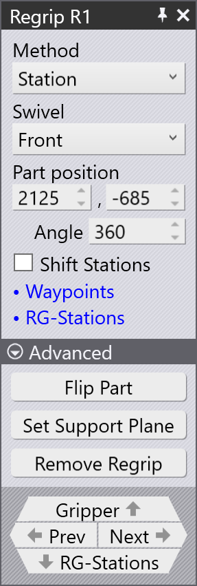

Regrip 패널

일반적인 Regrip 패널이 옆에 표시됩니다:
Regrip 패널에 액세스하려면:
-
벤드 네비게이터에서 R1 셀을 두 번 클릭합니다.
-
또는 재그립 위치에서 BendMaster 그리퍼가 잡고 있는 부품을 클릭합니다.
재그립의 메서드
부품을 재그립하는 다섯 가지 방법은 다음과 같습니다:

-
Clamp
-
Clamp+Station
-
During Bend
-
Station
-
Post-Bend
Clamp
Clamp 방법을 선택하면 그리퍼는 벤딩 도구(펀치 및 다이)에 의존하여 부품을 고정하고 스위블 시퀀스를 완료한 다음 부품의 다른 쪽에서 다시 그립합니다.
Insert part first 및 BG: Z before X 는 삽입 전략에서 이미 설명되었습니다.

Clamp+Station
Clamp+Station 방법을 선택하면 클램핑 지점에서 재그립이 발생하지만 부품을 지지하는 *RG-Stations*에서도 발생합니다.
이 방법은 길게 돌출된 부품을 구부릴 때 유용합니다.

During Bend
During Bend 방법에서는 벤딩 작업이 시작되자마자 그리퍼가 동시에 스위블을 시작하고(필요한 경우) 벤딩 작업이 끝날 때 정확히 재그립을 수행합니다.
펀치의 열림은 로봇 그리퍼가 부품을 단단히 잡고 있을 때만 시작됩니다.

Station
Station 방법을 선택하면 부품을 지지하는 RG-Stations에서 재그립이 발생합니다.
이 방법은 큰 치수의 부품을 처리할 때 필수적입니다.

Post-Bend
Post-Bend 방법을 선택하면 부품이 여전히 클램핑 지점에 있는 상태에서 벤딩 프로세스 후에 재그립이 발생합니다.
이 방법에서는 로봇 그리퍼가 벤딩 작업 중에 부품을 보조합니다. 벤딩 작업이 예상 결과로 완료되면 재그립 작업이 시작됩니다.

스위블
재그립 작업 중에 로봇 그리퍼는 부품을 벤드 도구 사이 또는 RG-Stations 그리퍼에 배치한 다음 부품의 다른 쪽으로 이동하여 재그립을 수행합니다.
충돌을 방지하기 위해 로봇 그리퍼는 부품, 벤드 도구 및 RG-Stations에서 약간 떨어진 곳으로 추출된 다음 스위블 동작을 수행합니다. 이 추출 및 스위블 동작은 세 가지 방식으로 발생합니다:
-
전면
-
왼쪽
-
오른쪽
아래 이미지는 그리퍼의 추출을 보여줍니다:

이 동작 후 그리퍼는 스위블하여 부품의 하단으로 이동하고 재그립을 수행합니다.